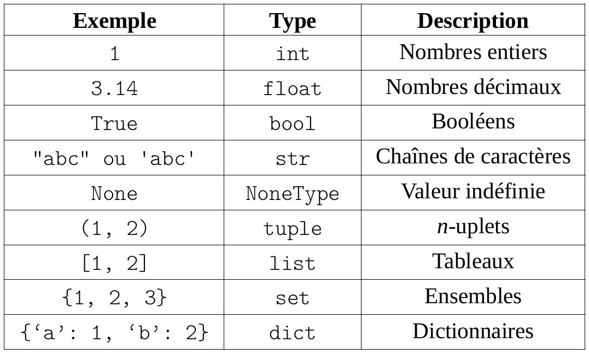

\huge \textbf{Thème 4}\normalsize
\Large \textbf{Chapitre 5 : Mise au point de programmes et gestion des bugs}\normalsize
Documentation⚓︎
Documenter ses programmes⚓︎
Comme nous l'entretenons depuis le début d'année dernière, il est important de bien documenter ses programmes, ses fonctions, ses classes, ...
En particulier, il faut décrire l'objet documenté, les paramètres éventuels, l'objet retourné éventuel, les effets de bord (side effect), et illustrer ensuite par un ou plusieurs exemples.
Exemple⚓︎
1 2 3 4 5 6 7 8 9 10 11 12 13 | |
Les types⚓︎
Définition⚓︎
Définition⚓︎
En programmation, la notion de type désigne une classification des objets manipulés en fonction de leur nature.
Remarque⚓︎
Selon les langages de programmation, ces informations sont plus ou moins présente, mais il est de bon ton de ne pas les oublier.
Les types en Python⚓︎
Liste non exhaustive des types en Python :

Propriété⚓︎
Pour obtenir le type d'une variable, le langage Python dispose de la fonction type.
Remarque⚓︎
En langage Python, tout nom de classe définit un type, de même nom pour les instances de cette classe.
Exemple⚓︎
1 2 3 4 5 6 7 8 | |
Remarque⚓︎
En langage Python, la gestion des type est qualifiée de dynamique : c'est au moment de l'exécution du programme que l'interpréteur Python vérifie la concordance entre les opérations et les types des valeurs utilisées.
Annoter les variables et les fonctions⚓︎
Important⚓︎
Bien que les type en langage Python, ne jouent réellement un rôle qu'au niveau des opérations de base, il est nécessaire, lorsque l'on programme d'avoir en tête les types attendus pour les paramètres, la valeur retournée ainsi que pour les variables locales utilisées.
Annoter les variables et fonctions en Python⚓︎
Pour annoter une variable (paramètre ou variable locale), il suffit de faire suivre le nom de la variable de : suivi du type de celle-ci.
Pour annoter une fonction, il suffit de faire précéder les : à la fin de la ligne par -> suivi du type de l'objet retourné.
Exemple⚓︎
1 2 3 4 5 6 7 8 9 10 11 12 13 14 15 16 | |
Tester un programme⚓︎
Vérifier les types des paramètres⚓︎
Préconditions d'une fonction⚓︎
Pour vérifier les préconditions d'une fonction, en langage Python, l'usage de la fonction isinstance est parfaitement adaptée.
\newpage
Exemple⚓︎
1 2 3 4 5 6 7 8 9 10 11 12 13 14 15 | |
Postconditions⚓︎
Tester un programme⚓︎
Outre la vérification des préconditions comme le typage des paramètres, il est aussi important de vérifier que le programme répond bien aux attentes illustrées par les exemples de la dicumentation.
Pour cela, en langage Python, il convient d'utiliser la fonction testmod de la bilbiothèque doctest.
Exemple⚓︎
1 2 3 4 5 6 7 8 9 10 11 12 13 14 15 16 17 18 19 | |
Remarque⚓︎
Penser à consulter la documentation de la fonction testmod afin de connaître les paramètres utilisables tels que verbose de type bool.
Astuce⚓︎
Il conviendra de bien choisir les exemples illustratifs afin de parcourir l'ensemble des situations possibles (cas généraux, cas particuliers, etc ...).
Détecter un bug⚓︎
Note historique⚓︎
Grace Hopper rapport en 1947 un problème devenu célèbre : il s'agissait d'un insecte (bug en anglais) ayant provoqué des erreurs de calcul dans un ordinateur MarkII.
Le programme ne fonctionne pas !⚓︎
Une fois les préconditions et post conditions bien écrites et les variables bien typées, il arrive (parfois, fréquemment, ...) qu'un programme ne réponde pas comme nous l'entendons. On parle en général de bug.
Sources de bugs fréquents⚓︎
Les erreurs au sein d'un programme peuvent être nombreuses mais certaines sont "classiques" et méritent d'être décelées rapidement afin d'utiliser son temps à la correction des bugs plus délicats.
Parmi les bugs fréquemments rencontrés, on peut alors citer :
- les problèmes liés au typage au sein du programme (additionner un nombre et une chaîne de caractère par exemple) ;
- les effets de bord non désirés (modification d'un objet mutable tel que les
listen langage Python, copie correcte de ces objets et non uniquement à l'aide d'un simple=, ...) ; - débordement de tableaux (dépasser la longueur d'un objet de type
listlorsque qu'on appelle un élément d'indice donné) ; - non exhaustivité d'une instruction conditionnelle (certaines conditions ne sont pas traitées dans une succession de
ifouelif) ; - inégalité inversée ou stricte ou large malvenue ;
- comparaison de nombres flottants ;
- mauvais nommage des variables (suite par exemple à une modification du nom de manière ponctuelle et non suivie);
Les assertions⚓︎
Astuce⚓︎
Outre un usage de vérifications de précondition, l'assertion peut aussi être utilisée par le programmeur au sein d'un programme pour vérifier qu'une condition, à priori vraie, mais que l'on soupçonne d'être fausse et en conséquence, à la source d'un bug puisse être vérifiée.
Les exceptions⚓︎
Définition⚓︎
Lorsqu'une expression ou une instruction est syntaxiquement incorrecte, elle peut provoquer une erreur lorsqu'on essaie de l'exécuter.
Les erreurs détectées à l'exécution sont appelées exception.
Exemple⚓︎
1 2 3 4 5 6 7 8 9 10 11 12 | |
[5, 0, 9], la division par 0 lors du calcul de l'inverse du deuxième élément engendre une exception, tout comme si ce dernier est une chaîne de caractère :
1 2 3 4 5 6 7 8 9 10 11 12 | |
try ... except ...⚓︎
Les exceptions ne sont pas un simple mécanisme de débogage. Elle servent avant tout à gérer les cas exceptionnels, et on peut les détecter, et réagir quand elles surviennent, à l'aide de l'instruction try: et except: en Python.
Exemple⚓︎
1 2 3 4 5 6 7 8 9 10 11 12 13 14 15 16 17 18 19 20 21 22 23 24 25 26 27 | |
Cette fois, la division par 0 ou un élément qui n'est pas un nombre va engendre une impression. Les calculs d'inverses des éléments suivants ont été effectués :
1 2 3 4 5 6 | |
Le pas à pas⚓︎
Le pas à pas⚓︎
Malgré toutes les vérifications d'usage, un programme peut ne pas répondre aux attentes. Pour détecter les erreurs restantes, il est très utiles d'utiliser le mode Pas à Pas souvent proposé par les interpréteurs.
En complément, il est également possible d'observer le comportement en mémoire.
Astuce⚓︎
Ne pas hésiter à utiliser la page Web Python Tutor 1 qui permet de répondre aux besoins décrits ci-dessus.
\underline{{\textit{\textbf{Sources}}}}
- Numérique et sciences informatiques, Tale, Ed. ellipses. p256 à 260. ISBN 978-2-340-03815-8.
- numérique et sciences informatiques, Tle, Ed. ellipses. p45 à 58. ISBN 978-2-340-03855-4.
-
Python Tutor : http://pythontutor.com/visualize.html#mode=edit ↩